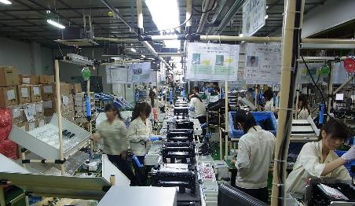
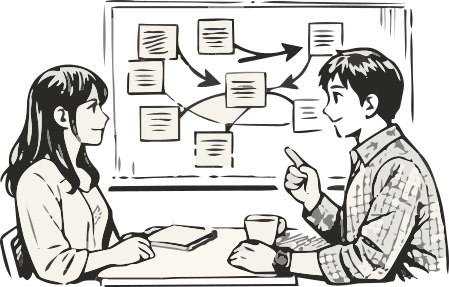
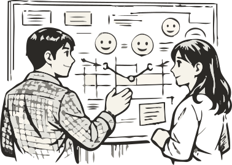

Selected Work — 01
新規事業・DX検討を
Advisory としてリード
「何を解くべきか」を問い直すところから始め、調査・発見・設計・検証・提案まで、クライアントと伴走しながら事業の種を育てる。
Philosophy
解く前に、問いを疑う。
新規事業やDXの検討が行き詰まる多くのケースで、本当の問題は「解決策がない」ことではなく、「問い自体が間違っている」ことだ。「新しいサービスを作りたい」という依頼の背後に、「既存事業の限界を突破したい」という本音があることは珍しくない。
だからアドバイザリーの仕事は、答えを渡すことではなく、クライアントが自分たちで答えを見つけられる「問いの構造」を一緒に作ることだと考えている。正しい問いを立てれば、解は自然と見えてくる。
ここでいう「問い」とは、プロジェクトの向かう方向を決める最上位の命題のことだ。たとえば、クライアントが「新しいアプリを作りたい」と言ってきたとき、それは答えであって問いではない。その背後にある問いは「なぜ顧客は2回目を使わないのか？」かもしれない。前者に答えるとアプリができる。後者に答えると体験の再設計が生まれる。同じ予算でも、どちらの問いに答えるかで成果はまったく変わる。

「解決策を持ち込むコンサルタントではなく、問いを立て直すパートナーでありたい。」
Approach
２つの軸で、課題の核心に迫る。
このアドバイザリーの方法論は、大きく２つのアプローチを組み合わせている。ひとつは Amazon が実践する Working Backwards——「完成した姿から逆算する」思考法。もうひとつは、デザイナーとして現場で培ってきたデザイン思考——ユーザーの実態から課題を発見する観察ベースのアプローチだ。
Working Backwards
Amazonが社内プロセスとして実践する、「顧客体験から逆算する」思考法。まずプレスリリースを書く——製品が完成したと仮定して、顧客に向けたリリース文を先に書くことで、「何を届けたいか」を技術や予算の制約なしに言語化する。
次にFAQ を書く——顧客や社内から来るであろう厳しい問いに先回りして答えることで、コンセプトの穴を早期に発見する。この PRFAQ ドキュメント（プレスリリース＋FAQ）が合意されて初めて、開発・設計が始まる。
「作りたいもの起点」ではなく「顧客にとっての価値起点」で事業を設計するこの発想は、新規事業やDX検討の現場でそのまま使える強力な道具だ。
Design Thinking
「人を中心に置いて考える」ことを原則とする、課題発見と解決のフレームワーク。特徴は、答えを考える前に観察することに時間をかける点だ。ユーザーが「困っている」と言わない課題の中にこそ、本質的な問いが隠れている。
具体的にはエスノグラフィー（現場に入り込んでの行動観察）とインタビュー（言葉の背後にある感情・動機の深掘り）を組み合わせる。得られた断片的な観察をKJ法や親和図で構造化し、「だからこそ、こう解くべきだ」というインサイトに昇華させる。
デザイナーとして約30年、製品・UX・サービスの現場でこの感覚を磨いてきた。その経験が、コンサルティングの場面でそのまま生きている。
Process — Overview
発見から提案まで、一気通貫で伴走する。
7つのステップで構成されるが、直線ではなく行き来しながら進む。特に「問いの設定」と「課題の発見」は、調査の結果を受けて何度でも問い直す。
Process — In Detail
各ステップで何をするか、なぜそれが重要かを詳しく説明する。
-
01
問いの設定 — What to solve? 依頼された課題をそのまま受け取らない。Working Backwards のフレームで「理想の未来像」を先に言語化し、本当に解くべき問いを経営層と合意形成する。この段階の質が、プロジェクト全体の成否を決める。
-
02
観察・調査 — Ethnography & Interview 現場に足を運び、ユーザーの行動を観察するエスノグラフィーと、深層心理に迫るインタビューを組み合わせる。「何に困っているか」より「なぜそうしているか」を問い続けることで、表面的なニーズの背後にある本質的な課題を掘り起こす。
-
03

課題の発見・構造化 — Insight 調査で得た断片的な観察をパターン化し、「だからこそ、こうすべきだ」というインサイトに昇華させる。課題を構造で捉えることで、複数の施策を束ねた一貫した戦略の下地を作る。 -
04

カスタマージャーニー設計 — Journey Map ユーザーの体験を時系列と感情の変化で可視化する。タッチポイントごとの課題と機会を洗い出し、どこにどんな介入が必要かをクライアントと合意する。「絵空事の戦略」を「実感できる体験の設計」に変換するプロセス。 -
05
ソリューション設計 — Solution ジャーニーマップを起点に、解決策の方向性を絞り込む。機能要件だけでなく、「誰が・いつ・なぜ使うか」という文脈ごと要件として定義。開発チームへの橋渡しまでを視野に入れた精度で仕上げる。
-
06
プロトタイピング・PoC 作ってみることでしか見えない課題がある。低コストで試し、早期に失敗し、学びを次の設計に反映する。PoC の設計から実行、評価まで一貫して関与し、「机上の空論で終わらせない」プロセスを担保する。
-
07
事業提案 — Proposal 検証された仮説を、経営判断に足りる事業計画に仕上げる。市場規模・収益モデル・ロードマップ・リスク評価を含むデッキを作成し、意思決定者へのプレゼンテーションまで伴走する。
Field Research
現場に出る。海外にも。
リサーチは机の上で完結しない。2017年、パリ・トゥールーズへの現地視察では、Airbus・Nokia をはじめとする欧州企業のイノベーション組織・活動を直接調査した。組織がいかに「探索」と「深化」を両立させているか、その構造と文化を現地で観察することで、日本企業への提言に厚みを加えた。
What Makes It Different
デザイナーが、経営の言語を話す。
多くのコンサルタントはフレームワークを持っている。多くのデザイナーはユーザー観察ができる。ただ、その両方を現場で統合して使える人材は、まだ多くない。
約30年のデザインキャリアで磨いた「人を観る目」と、IT・クラウド企業での実務で身につけた「事業の言語」——この二つを一人の中に持っていることが、このアドバイザリーの核心だ。ユーザーの感情を語りながら、同時にビジネスモデルとROIを語れる。それが、経営層とデザインチームを同じ場所に連れてくるための条件だと思っている。
- スタート地点の「問い直し」 「システムを作りたい」という依頼が「顧客体験を再設計したい」という本質的な問いに変わり、プロジェクトのスコープと優先度が根本から変わった事例。
- エスノグラフィーで見えた真実 社内ヒアリングでは「不満なし」と言われていた業務プロセスに、現場観察で複数の暗黙の非効率が発見され、DX施策の優先順位が逆転した事例。
- PoC から外販展開へ 社内課題の解決を目的としたPoCが、外販ビジネスの種として認識され、新規事業提案へと発展した事例（詳細は Selected Work 05 参照）。
Output Sample
カスタマージャーニーマップ
某住宅関連企業の新規サービス導入検討における、顧客ペルソナ×7フェーズのジャーニーマップ。行動・感情・タッチポイントを横断的に可視化したアウトプットサンプル。
ジャーニーマップを見る ↗